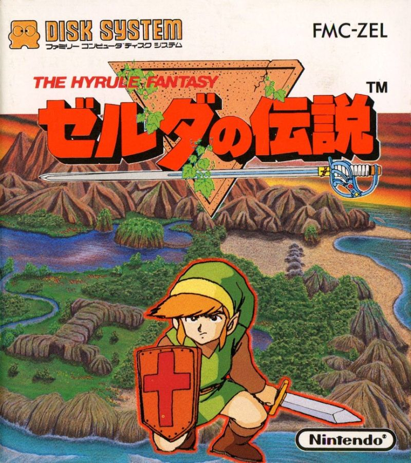

Zeruda no Densetsu

Problem to Solve
You’ve just been hired as a game historian for Nintendo, the Japanese multinational video game company. Your first job is to organize an old data file that details the history of Zeruda no Densetsu (The Legend of Zelda), one of the company’s most popular game series.
In a file called zelda.R, in a folder called zelda, tidy up some data on the history of The Legend of Zelda and use it to answer questions about the series.
Distribution Code
For this problem, you’ll need to download several .R files and zelda.csv.
Download the distribution code
Open RStudio per the linked steps and navigate to the R console:
>
Next execute
getwd()
to print your working directory. Ensure your current working directory is where you’d like to download this problem’s distribution code. If using RStudio through cs50.dev the recommended directory is /workspaces/NUMBER where NUMBER is a number unique to your codespace.
If you do not see the right working directory, use setwd to change it! Try typing setwd("..") if in the working directory of another problem, which will move you one directory higher.
Next execute
download.file("https://cdn.cs50.net/r/2024/x/psets/4/zelda.zip", "zelda.zip")
in order to download a ZIP called zelda.zip into your codespace.
Then execute
unzip("zelda.zip")
to create a folder called zelda. You no longer need the ZIP file, so you can execute
file.remove("zelda.zip")
Now type
setwd("zelda")
followed by Enter to move yourself into (i.e., open) that directory. Your working directory should now end with
zelda/
If all was successful, you should execute
list.files()
and see several .R files alongside zelda.csv. If not, retrace your steps and see if you can determine where you went wrong!
Schema
Before jumping in, it will be helpful to get a sense for the “schema” (i.e., organization!) of the data you’re given.
Learn about this data
In zelda.csv, you are provided data on the history of The Legend of Zelda. In zelda.csv, there are 4 columns:
- title, which is the title of a game in The Legend of Zelda series
- release, which includes the year a game was released and the console for which it was released
- role, which describes a role in the development of a game
- names, which lists the names of those who held a given role in the development of a game
Needless to say, this data is not very tidy! It’s up to you to format it correctly and, once ready, answer questions about the history of the series.
Specification
In this problem, you’ll use each of the included .R files to take one step in your analysis of the given data.
1.R
In 1.R, organize the data in zelda.csv to get it ready for analysis. Save the cleaned data as a tibble named zelda in zelda.RData.
Make sure the tibble follows these tidy data rules:
- Each row should be one release of a The Legend of Zelda game.
- Keep in mind, a single game is often released multiple times on different systems.
- Each column should be one way a release can differ.
- For example, releases can differ based on release year, system, or the people involved in making it.
- Each cell should be a single piece of information.
The first few rows of the tibble should look like the below. The tibble should include only the following columns. Capitalization of column names does matter!
| title | year | system | directors | producers | designers | programmers | writers | composers | artists |
|---|---|---|---|---|---|---|---|---|---|
| The Legend of Zelda | 1986 | Famicom Disk System | Shigeru Miyamoto, Takashi Tezuka | Shigeru Miyamoto | Shigeru Miyamoto, Takashi Tezuka | Toshihiko Nakago, Yasunari Soejima, I. Marui | Takashi Tezuka, Keiji Terui | Koji Kondo | NA |
| The Legend of Zelda | 1987 | Nintendo Entertainment System | Shigeru Miyamoto, Takashi Tezuka | Shigeru Miyamoto | Shigeru Miyamoto, Takashi Tezuka | Toshihiko Nakago, Yasunari Soejima, I. Marui | Takashi Tezuka, Keiji Terui | Koji Kondo | NA |
| The Legend of Zelda | 2003 | GameCube | Shigeru Miyamoto, Takashi Tezuka | Shigeru Miyamoto | Shigeru Miyamoto, Takashi Tezuka | Toshihiko Nakago, Yasunari Soejima, I. Marui | Takashi Tezuka, Keiji Terui | Koji Kondo | NA |
| … | … | … | … | … | … | … | … | … | … |
Notice how the tibble follows the principles of tidy data:
- Each row is a release.
- Each column is information about a release.
- Each cell is a single piece of information.
A list of names can count as “a single piece of information” for this problem’s purposes.
Save the resulting zelda tibble, using save, in a file named zelda.RData. You’ll use this tibble in the remaining .R files.
Hint
To tidy your data, consider whether any of the functions available in the stringr library might be useful to you—even if it’s not one you saw in lecture!
2.R
Your first assignment is to summarize the number of Zelda releases in each year.
In 2.R, load the tidied zelda tibble from zelda.RData with load. Update the tibble by summarizing the number of releases in each year. Sort the rows by the number of releases in a given year, most to least.
The tibble should have two columns:
| year | releases |
|---|---|
| … | … |
Save the resulting zelda tibble, using save, in a file named 2.RData.
3.R
Your next assignment is to identify the original (first) release for each Zelda title.
In 3.R, load the tidied zelda tibble from zelda.RData with load. Update the tibble so that it includes only the first release(s) for each Zelda title. If a title had two different releases in its first year (perhaps for two different systems), include both.
Sort the releases by year, from oldest to newest. If any two releases have the same year, sort them alphabetically by title, followed by system.
Save the resulting zelda tibble, using save, in a file named 3.RData.
4.R
Your next assignment is to help commemorate the work of Shigeru Miyamoto, one of the original creators of the Zelda series.
In 4.R, load the tidied zelda tibble from zelda.RData with load. Update the tibble so that that it includes only the original releases for all titles on which Shigeru Miyamoto was a producer. If any title had two different releases in its first year (perhaps for two different systems), include both.
Sort the releases by year, from oldest to newest. If any two releases have the same year, sort them alphabetically by title, followed by system.
Save the resulting zelda tibble, using save, in a file named 4.RData.
5.R
As Nintendo expands its leadership team, your final assignment is to identify the original releases for all titles with more than 1 producer.
In 5.R, load the tidied zelda tibble from zelda.RData with load. Update the tibble to include only the first release(s) for each title with more than 1 producer. If such a title had two different releases in its first year (perhaps for two different systems), include both.
Sort the releases by year, from oldest to newest. If any two releases have the same year, sort them alphabetically by title, followed by system.
Save the resulting zelda tibble, using save, in a file named 5.RData.
Usage
Assuming your .R files are in your working directory, execute each file individually to test your work:
source("1.R")
How to Test
Here’s how to test your code manually:
- Executing
1.Rshould create a tibble namedzeldawith 71 rows and 10 columns - Executing
2.Rshould create a tibble namedzeldawith 27 rows and 2 columns - Executing
3.Rshould create a tibble namedzeldawith 22 rows for 10 columns - Executing
4.Rshould create a tibble namedzeldawith 10 rows and 10 columns - Executing
5.Rshould create a tibble namedzeldawith 3 rows and 10 columns
check50
You can also check your code using check50, a program that CS50 will use to test your code when you submit. But be sure to test it yourself as well!
Run the following command in the RStudio console:
check50("cs50/problems/2024/r/zelda")
Green smilies mean your program has passed a test! Red frownies will indicate your program output something unexpected. Visit the URL that check50 outputs to see the input check50 handed to your program, what output it expected, and what output your program actually gave.
Be sure that you’ve created each .R file’s corresponding .RData file—it’s your .RData files that check50 will check!
How to Submit
You can submit your code using submit50.
Keeping in mind the course’s policy on academic honesty, run the following command in the RStudio console:
submit50("cs50/problems/2024/r/zelda")
Acknowledgements
Data compiled from Wikipedia. Cover image retrieved from cdn.famiwiki.net/1/16/The_Hyrule_Fantasy_Zelda_no_Densetsu_JPN_FDS_Box_Art.jpg.
{kind=link}